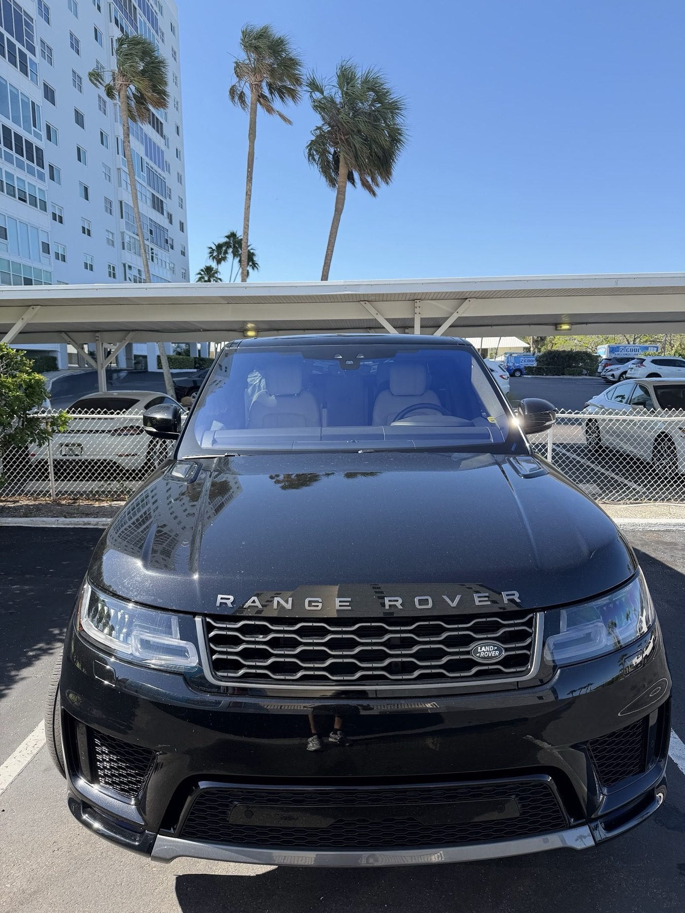
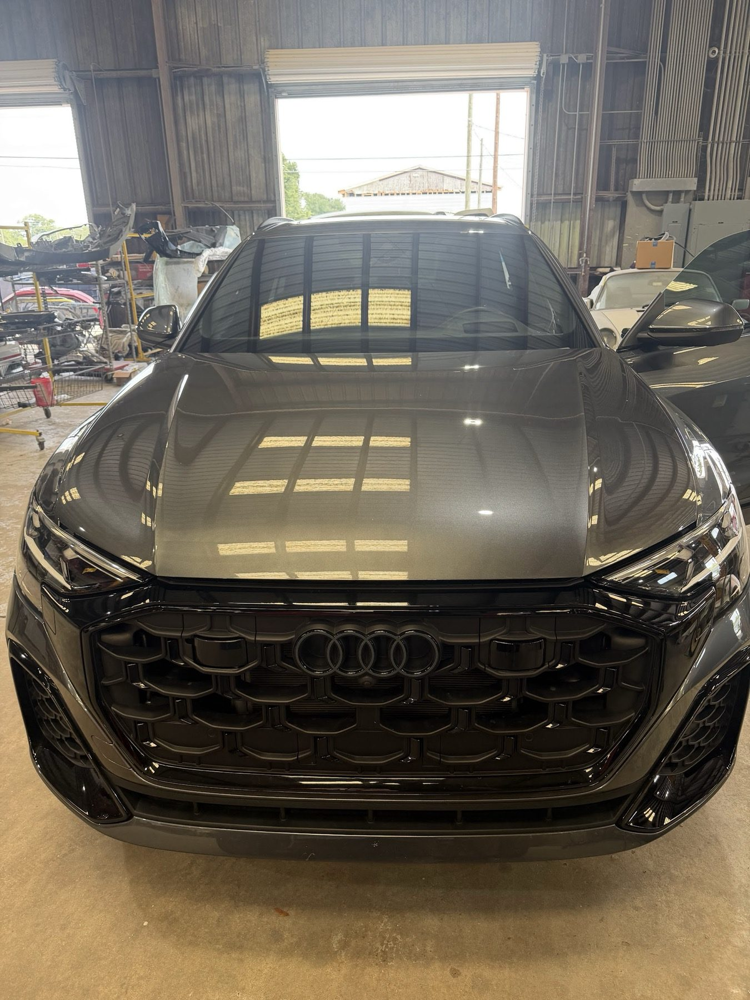
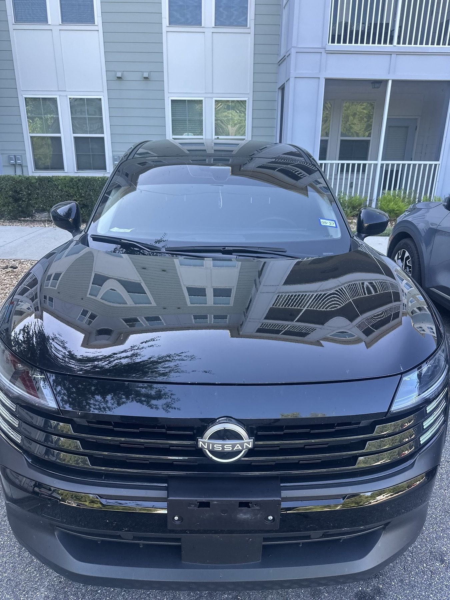
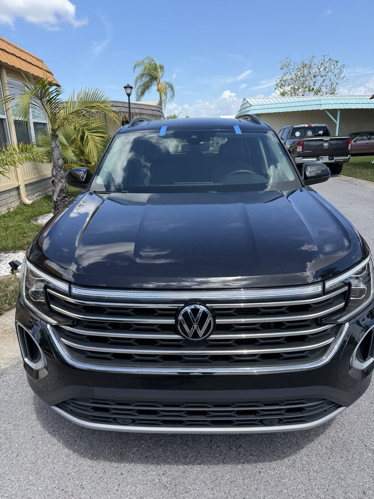
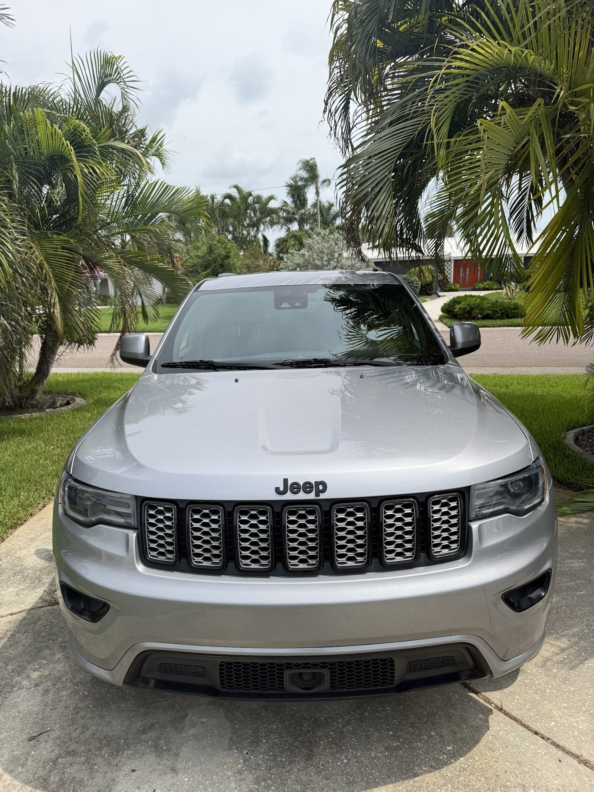
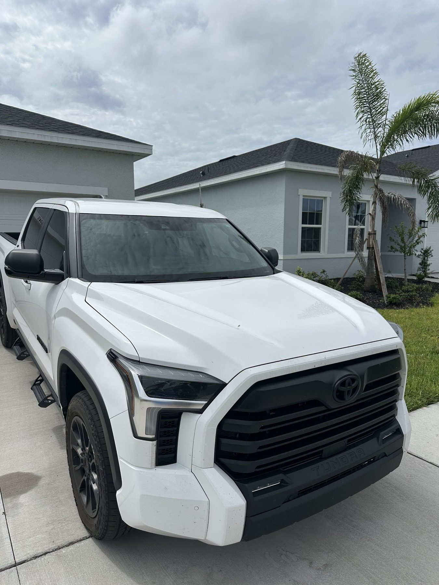

Windshield replacement
New glass fitted fast, for cars, SUVs and trucks.
- Fast turnaround
- Late-model vehicles
Auto glass · Wesley Chapel, FL
Fast windshield replacement and lane assist calibration, with help setting up your insurance claim.

Our work
Windshield replacement with the calibration and paperwork that come with it.
New glass fitted fast, for cars, SUVs and trucks.
Calibration after the glass goes in, so lane assist works as it should.
We help you submit and set up the claim with your insurance.
Reviews
Alex at Central Florida Recalibrations is the real deal! He replaced my windshield fast, handled everything efficiently, and made the entire process incredibly easy. Great communication, professional service, and quality work from start to finish. If you need a windshield replacement or recalibration, don’t waste time shopping around…call Alex. Central Florida Recalibrations is easily one of the best in the area!
CFR is the best! No need to look any where else. Alex was there every step of the way . From helping me submit my claim with my insurance. To calibrating my lane assist and replacing my windshield the very next day!
Great service from alex and his team,the process was easy he helped me with setting up the claim with my insurance next day service.definitely recommend using Central Florida calibrations..
Alex is amazing! He walked me through the process, told me exactly how it was going to go and boom!!! In less than 24 hours my windshield was replaced! Customer service is 100/10! Will recommend!!! Thank you Alex!!!

About us
A Wesley Chapel shop on Noor St for windshield replacement and lane assist recalibration.
You get clear communication from the first call to the finished job, and the claim paperwork handled with you.
Finished jobs




Open seven days, 7 AM to 8 PM. Call to book a time.